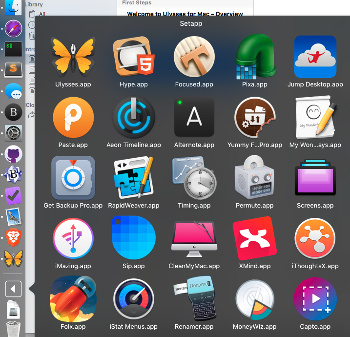
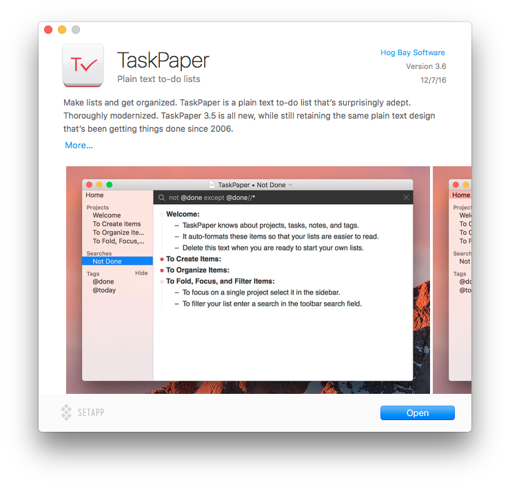

I think this is it. This is what the Apple App Store should look and feel like going forward. It's easy to install with all the possible apps just living in a folder until you double click to install.

Honestly, I don't know how to put it into words because it was so, so simple and it had all the little applications that I wanted but couldn't bring myself to buy because of the price1.

The super sad part about this is that I've taken on a new job where I have to use Windows all day. When I get home, it's family time. Coupled with that is this would be another subscription that I have to keep track of.
For the developers, I hope this works out that they get the money they deserve from all of those people who are sitting on the side lines.
-
How am I going to tell my wife that I spent $45 on a text editor when I've got to worry about rent almost every month. ↩